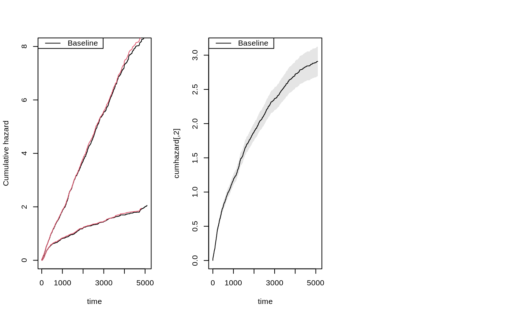
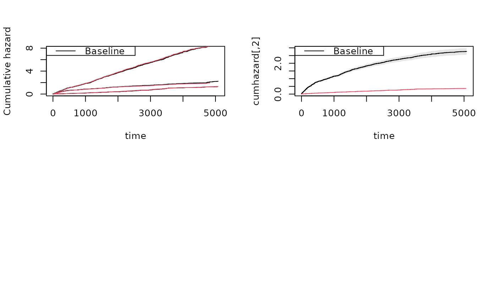
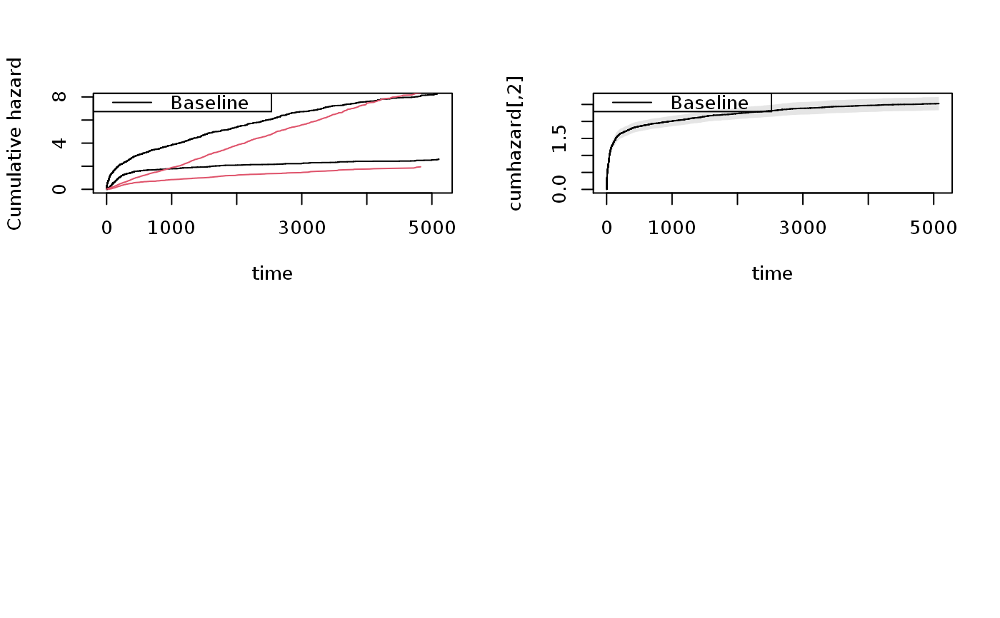

R/recurrent.marginal.R
simRecurrent.RdSimulation of recurrent events data based on cumulative hazards
simRecurrent( n, cumhaz, death.cumhaz = NULL, cumhaz2 = NULL, gap.time = FALSE, max.recurrent = 100, dhaz = NULL, haz2 = NULL, dependence = 0, var.z = 2, cor.mat = NULL, ... )
| n | number of id's |
|---|---|
| cumhaz | cumulative hazard of recurrent events |
| death.cumhaz | cumulative hazard of death |
| cumhaz2 | cumulative hazard of recurrent events of type 2 |
| gap.time | if true simulates gap-times with specified cumulative hazard |
| max.recurrent | limits number recurrent events to 100 |
| dhaz | rate for death hazard if it is extended to time-range of first event |
| haz2 | rate of second cause if it is extended to time-range of first event |
| dependence | =0 independence, =1 all share same random effect with variance var.z =2 random effect exp(normal) with correlation structure from cor.mat, first random effect is z1 and shared for a possible second cause, second random effect is for death |
| var.z | variance of random effects |
| cor.mat | correlation matrix for var.z variance of random effects |
| ... | Additional arguments to lower level funtions |
Must give hazard of death and recurrent events. Possible with two event types and their dependence can be specified but the two recurrent events need to have the same random effect, simRecurrentII more flexible !
Thomas Scheike
######################################## ## getting some rates to mimick ######################################## data(base1cumhaz) data(base4cumhaz) data(drcumhaz) dr <- drcumhaz base1 <- base1cumhaz base4 <- base4cumhaz ###################################################################### ### simulating simple model that mimicks data ###################################################################### rr <- simRecurrent(5,base1,death.cumhaz=dr) dlist(rr,.~id,n=0)#> id: 1 #> entry time status rr dtime fdeath death start stop #> 1 0 94.74704 0 1 94.74704 1 1 0 94.74704 #> ------------------------------------------------------------ #> id: 2 #> entry time status rr dtime fdeath death start stop #> 2 0.0000 201.7002 1 1 3546.747 1 0 0.0000 201.7002 #> 6 201.7002 336.5105 1 1 3546.747 1 0 201.7002 336.5105 #> 8 336.5105 397.4030 1 1 3546.747 1 0 336.5105 397.4030 #> 9 397.4030 957.6868 1 1 3546.747 1 0 397.4030 957.6868 #> 10 957.6868 1302.8361 1 1 3546.747 1 0 957.6868 1302.8361 #> 11 1302.8361 1781.8055 1 1 3546.747 1 0 1302.8361 1781.8055 #> 12 1781.8055 2534.4932 1 1 3546.747 1 0 1781.8055 2534.4932 #> 13 2534.4932 3546.7473 0 1 3546.747 1 1 2534.4932 3546.7473 #> ------------------------------------------------------------ #> id: 3 #> entry time status rr dtime fdeath death start stop #> 3 0.000000 3.794492 1 1 62.38468 1 0 0.000000 3.794492 #> 7 3.794492 62.384684 0 1 62.38468 1 1 3.794492 62.384684 #> ------------------------------------------------------------ #> id: 4 #> entry time status rr dtime fdeath death start stop #> 4 0 1115.675 0 1 1115.675 1 1 0 1115.675 #> ------------------------------------------------------------ #> id: 5 #> entry time status rr dtime fdeath death start stop #> 5 0 154.8258 0 1 154.8258 1 1 0 154.8258rr <- simRecurrent(1000,base1,death.cumhaz=dr) par(mfrow=c(1,3)) showfitsim(causes=1,rr,dr,base1,base1) ###################################################################### ### simulating simple model that mimicks data ### now with two event types and second type has same rate as death rate ###################################################################### rr <- simRecurrent(1000,base1,death.cumhaz=dr,cumhaz2=base4)#> Warning: collapsing to unique 'x' values#> #> status 0 1 2 #> death #> 0 120 2887 413 #> 1 880 0 0showfitsim(causes=2,rr,dr,base1,base4) ###################################################################### ### simulating simple model ### random effect for all causes (Z shared for death and recurrent) ###################################################################### rr <- simRecurrent(1000,base1,death.cumhaz=dr,dependence=1,var.gamma=0.4) ### marginals do fit after input after integrating out par(mfrow=c(2,2))showfitsim(causes=1,rr,dr,base1,base1)